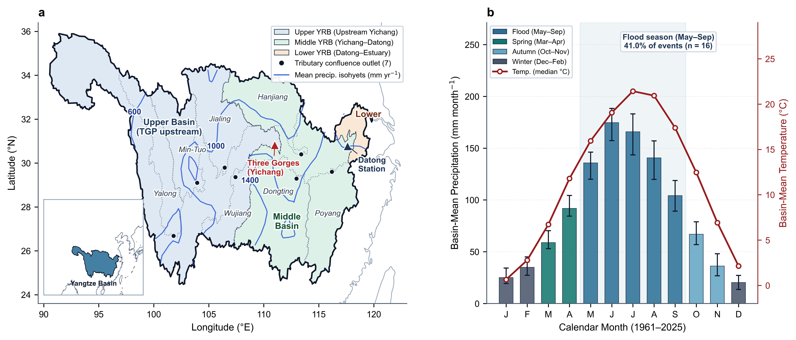

Reproducible data archive and analysis suite covering 65 years of CRU TS v4.10 precipitation, temperature, and Penman–Monteith PET grids, GPCC Monthly v2025 benchmark validation, Datong hydrometric discharge (1961–2024), and multi-reanalysis atmospheric fields (NCEP/NCAR-1 and NCEP-DOE-2) across the Yangtze River Basin and seven major tributaries.
All summary statistics below are loaded directly from the verified CSV tables exported by the analysis pipeline.
Across Upper, Middle (n = 42), and Lower subbasins (n = 39–42), nine parametric copulas (including 90°/270° rotated tail models) fall within |ΔAICc| < 2 relative to Independence. At whole-basin scale (n = 39), 90°-rotated Gumbel lowers AICc by −2.37 via isolated severe droughts yet fails Cramér–von Mises goodness-of-fit (p = 0.017) whereas Independence passes (p = 0.544), with 43/748 raw nominal p < 0.05 cells and 0/748 BH-FDR q < 0.05 (seasonal AR(1) field p = 0.274).
| Domain | Events | τ (p-val) | rs (p-val) | Best Copula | ΔAICc vs Indep |
|---|
Sequential transitions coincide with intensification of the Northeast Asia–Plateau dipole (DI500 +1.170σ, DI200 +1.037σ) and surface-bounded moisture flux convergence (ΔDIVps = −1.120σ, −1.10 mm day⁻¹, qFDR = 0.0005), replicating in NCEP-DOE-2 (p ≤ 0.008). However, matched dipole superiority disappears after 1992 (p = 0.994) and in onset-only controls (p = 0.231), corrected Huang (2004) EAP850 reverses (+0.886σ), and causal seasonal ENSO/NAO CV5 AUCs remain near chance (0.357–0.422).
| Diagnostic | Stratum | n | Dry→Wet Shift | qFDR |
|---|
Filter all 39 basin-wide drought-to-flood abrupt alternation episodes by hydrological season, basin wet severity, tributary localization, and Datong hydrometric discharge response (1961–2024).
| # | Dry Spell | Wet Spell | Season | Sd | Fw (Basin) | Peak Tributary (Fw) | Ratio | Precip Excess (mm) | Datong Qwet |
|---|
Inspect high-resolution diagnostic figures rendered by the repository scripts.

git clone https://github.com/yuelangmanle/yangtze-drought-flood-transitions.git cd yangtze-drought-flood-transitions pip install -r requirements.txt # Verify derived figures (Fig. 1–6 & ESM_Fig1) from included CSVs python3 run_pipeline.py --derived-only # Full end-to-end execution from local raw datasets python3 scripts/fetch_public_data.py --raw-dir /path/to/raw python3 run_pipeline.py --raw-dir /path/to/raw --mask data/yangtze_mask.npz
@misc{deng2026yangtze_dfaa,
author = {Deng, Zijie},
title = {Yangtze River Basin Sequential Drought-to-Flood Transition Analysis (v2.0.0)},
year = {2026},
howpublished = {GitHub Repository},
url = {https://github.com/yuelangmanle/yangtze-drought-flood-transitions}
}